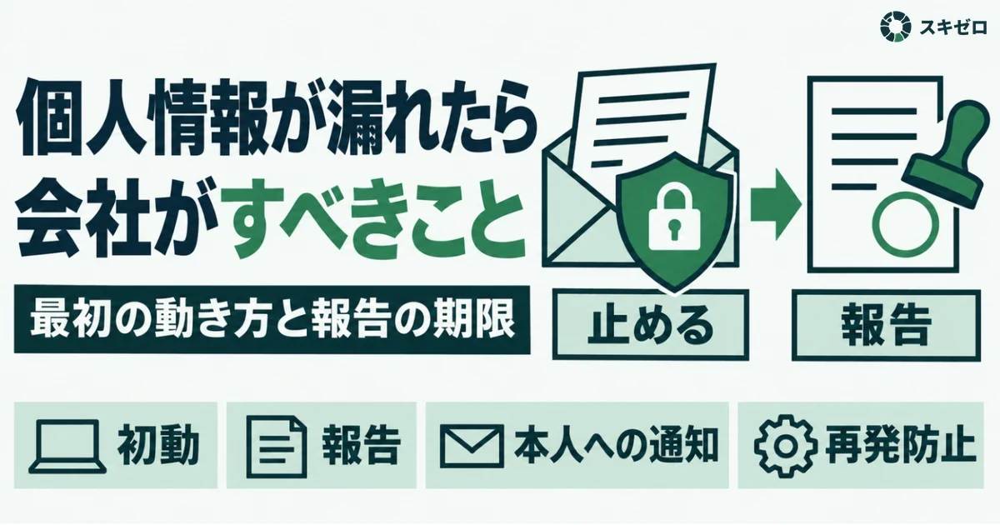
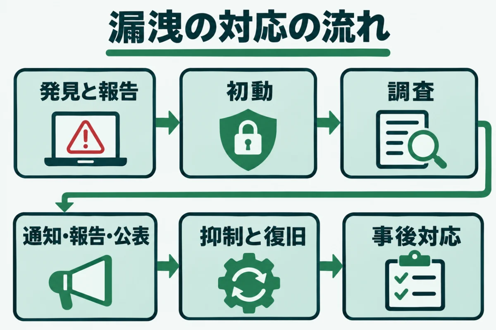
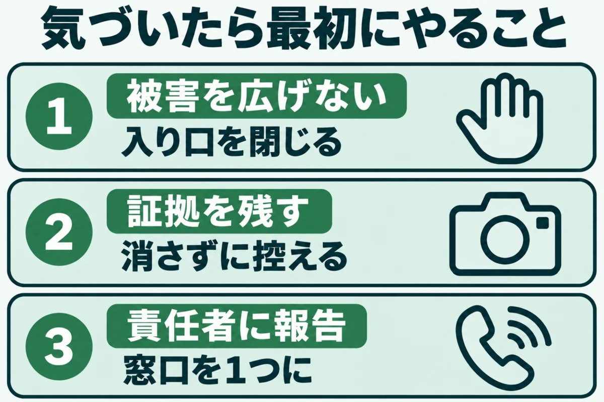
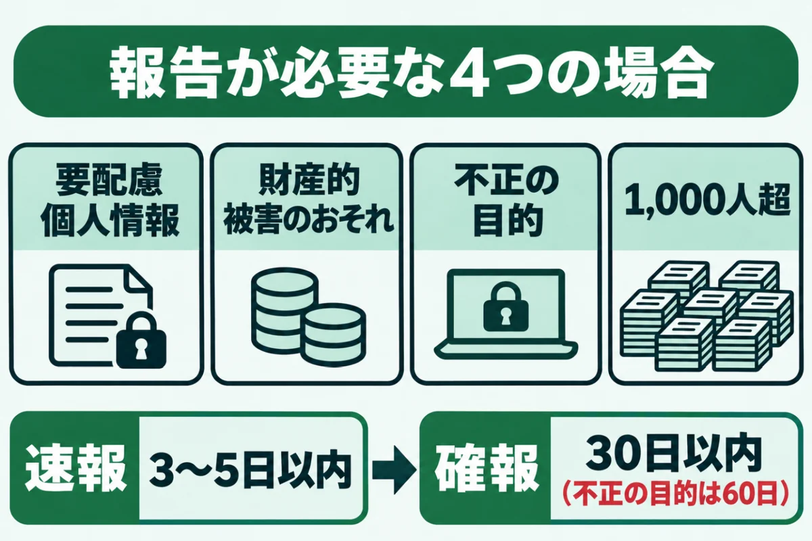
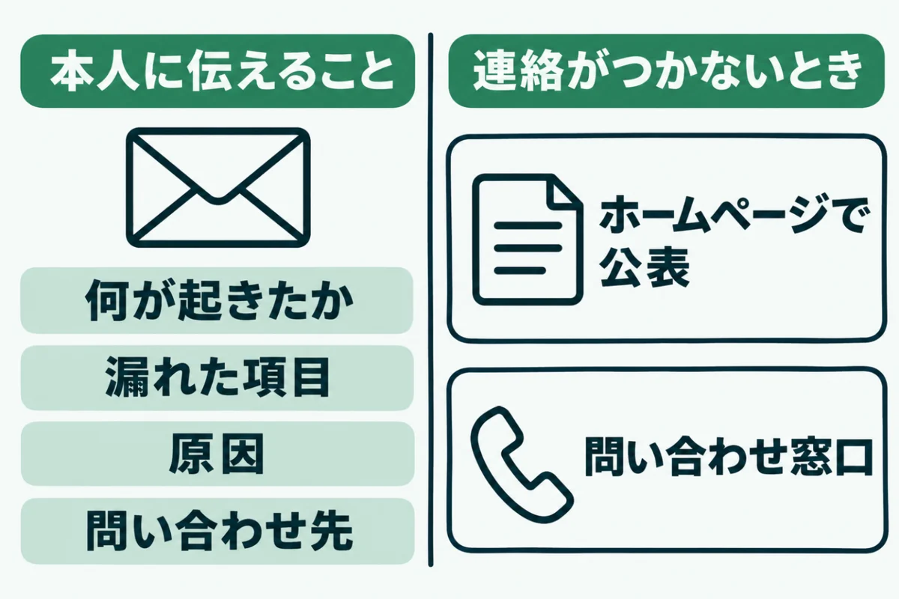
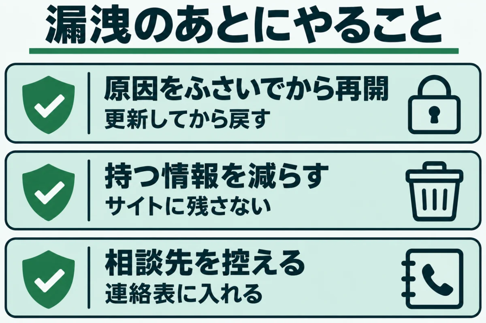

ホームページから個人情報が漏れたら？会社がすべきこと報告が必要な4つの場合と最初の動き方

「ホームページのお問い合わせの内容が漏れたかもしれない。まず何をすればいいのか」と焦っていませんか？
個人情報の漏洩は、気づいてからの数日の動き方で被害の大きさが変わります。場合によっては、国への報告や本人への通知が法律で義務になっているのです。
この記事では、ホームページから個人情報が漏れたときの対応を、最初の動きから順に紹介します。報告が必要になる場合と期限、本人への伝え方、再発防止までまとめました。
個人情報保護委員会とIPAの公開資料をもとに書いています。いざというときに慌てないよう、平時のうちに一度目を通しておいてください。
ホームページからの個人情報の漏洩と対応の全体像

ホームページからの個人情報の漏洩は、どこから漏れたかで対応の中身が変わります。まずは漏れ方の種類と、対応の大まかな流れを押さえておきましょう。
流れを知っていれば、誰が何をするかを落ち着いて決められます。小さな会社では担当者が1人ということも多いので、順番だけでも頭に入れておくと安心です。社内の誰に最初に知らせるかも、あわせて決めておきましょう。
ホームページから漏れる主な経路
ホームページからの漏洩で多いのは、不正アクセスでサイトの中身や控えを持ち出される形です。お問い合わせフォームの内容をサイトに保存していると、その記録ごと狙われます。メールの送り間違いも漏洩の一つです。個人情報保護委員会は、宛先をBCCでなくCCに入れて一斉に送った例を挙げています。設定の誤りで名簿が公開されていたという形も見られるでしょう。どの経路かによって、ふさぐべき場所が変わるのです。まずは、どの形に近いかを見当づけましょう。
対応の流れは6つの段階
IPAの「情報漏えい発生時の対応ポイント集」は、対応を6つの段階に分けています。発見と報告、初動、調査、通知と報告と公表、抑制と復旧、事後対応という順番です。被害の拡大と二次被害を防ぐことが、全体を通した一番の目的とされています。事実を一か所に集めて管理することや、隠さずに開示することも原則に挙げられました。2012年の古い資料ですが、流れの考え方は今も参考になります。法律の決まりは改正されているので、報告の部分は最新の案内で確かめてください。
個人情報の漏洩に気づいたら最初にやる対応3つ

個人情報の漏洩に気づいたら、原因探しより先にやることが3つあります。ここで迷うと、漏れる量が増えたり、調べる手がかりが消えたりするからです。
どれも、専門の知識がなくても進められる作業ばかりでしょう。社内に担当者がいなければ、制作会社やサーバー会社に連絡しながら同時に進めてください。気づいた日時は、あとで報告の期限を数える起点になるので必ず控えておきます。
① 被害を広げない
まず、漏れている元を止めましょう。名簿が見えるページがあれば非公開にし、怪しいフォームは一時的に止めます。管理画面やサーバーのパスワードも、ふだん使っていない別の端末から変えておくのが安全です。不正アクセスなら、入り口を閉じるのが最優先になります。カード番号やパスワードが含まれる場合は、本人に止める手続きを促すこともIPAの勧める対応です。止めた時刻と、止めた範囲も記録に残しておきましょう。
② 証拠を残す
慌ててファイルを消したり、サイトを作り直したりすると、何が起きたかを調べる手がかりが消えます。IPAも、システムに残った証拠を消さないよう注意を呼びかけているのです。画面の写しとアクセスの記録を先に控えることから始めましょう。いつ誰が何に気づいたかも、時刻とあわせてメモしておきます。メモは紙でもかまいません。サーバー会社のアクセスの記録は保存の期間が短いことがあるので、早めに取り出してください。
③ 責任者に報告して体制をつくる
担当者だけで抱え込まず、すぐに社長や責任者へ報告します。誰が調べ、誰が外部と連絡を取るかを決めておくと、動きがぶつかりません。外への説明の窓口を1つにまとめるのも大切な点です。窓口が複数あると、説明の食い違いが不信を招きます。不正アクセスが明らかなときは、警察への相談もIPAの資料で勧められている対応です。改ざんを伴う場合は、次の記事の流れも参考にしてください。ホームページ改ざんの復旧手順｜発見から再発防止までで詳しく紹介しました。
個人情報の漏洩で報告が必要になる場合と対応の期限

個人情報の漏洩の中には、国への報告が法律で義務になる場合があります。2022年4月から、個人情報保護委員会への報告と本人への通知が義務になりました。
当てはまるかどうかは、漏れた情報の中身と人数、漏れ方で決まります。漏れたと確定していなくても、そのおそれがあれば対象になる点に注意してください。期限は短いので、調べながら準備を進める形になります。
報告が必要になる4つの場合
個人情報保護委員会は、報告が必要な場合を4つに分けています。1つ目は、病歴などの要配慮個人情報が含まれる場合です。2つ目は、カード番号など財産の被害が出るおそれがある場合になります。3つ目は不正アクセスなど不正の目的による漏洩、4つ目は1,000人を超える漏洩です。ホームページへの不正アクセスは、人数が少なくても当たることがあるので気をつけてください。迷ったら、報告する前提で準備を進めましょう。どの場合に当たるかは、確報までに整理すれば足ります。
速報と確報の期限
報告は、速報と確報の2回に分けて行います。気づいた日からおおむね3〜5日以内に速報を出し、30日以内に確報を出す流れです。不正の目的によるおそれがある場合、確報の期限は60日以内に延びます。報告は委員会のホームページのフォームから行う形です。なお、2026年7月に改正個人情報保護法が公布され、規則などの見直しが進んでいます。報告の前には、委員会の最新の案内を確かめてください。
個人情報の漏洩を本人に知らせる対応

個人情報の漏洩が報告の対象になる場合は、本人への通知もあわせて必要です。報告の対象にならない場合でも、IPAは特別な理由がない限り本人に知らせるよう勧めています。
知らせ方を誤ると、問い合わせが殺到したり、不安を大きくしたりしかねません。何を、どう伝えるかを先に決めてから連絡しましょう。問い合わせに答える人と、答え方の基本の文も用意しておくと混乱を防げます。
本人に伝えること
個人情報保護委員会は、状況に応じて速やかに、本人に分かりやすい方法で知らせるよう求めています。伝える中身は、何が起きたかの概要、漏れた情報の項目、原因などです。本人が取れる対策も一緒に伝えると、二次被害を防ぎやすくなるでしょう。たとえば、パスワードの変更や、不審なメールに注意することです。問い合わせ先の電話番号やメールアドレスも、必ず添えてください。お詫びの言葉だけで終わらせず、次に何をするかを書くことが信頼につながります。
連絡がつかないときの代わりの方法
連絡先が分からない人や、連絡がつかない人もいるでしょう。その場合の代わりの方法として、委員会はホームページでの公表と問い合わせ窓口の設置を挙げています。公表の文面は事実だけを短く書くのが基本です。分かっていないことは「調査中」とし、推測で書かないようにしましょう。新しく分かったことがあれば、同じページに日付つきで追記していくのが基本です。トップページから、その知らせへのリンクを張っておくと見つけてもらいやすくなります。
個人情報の漏洩のあとの再発防止と対応の見直し

個人情報の漏洩の対応は、報告と通知で終わりではありません。原因をふさがないまま再開すると、同じ入り口から再び漏れるおそれがあるからです。
落ち着いたら、なぜ漏れたのかと、今後どう防ぐかを書き残しましょう。社内で共有しておけば、担当者が替わっても同じ失敗を防げます。数か月後に、決めた対策が続いているかを見直す日も決めておきましょう。
原因をふさいでから再開する
IPAは、原因が分かる前に代わりのサイトを立ち上げないよう注意を促しています。古いWordPressやプラグインの弱点が原因なら、更新してから再開しましょう。フォームで受け取った情報をサイトに残さない設定も見直す価値があります。運営者のサービスでも、受け付けた結果票は公開されない保管場所に置く形にしました。送信のメールにも、申込者の自由な書き込みは入れない作りです。持っていない情報は、そもそも漏れようがありません。
相談できる窓口を控えておく
IPAは、不正アクセスの被害を受けた、またはそのおそれがある企業向けに特別相談窓口を設けています。初動の助言や、対応を頼める専門の会社の一覧の紹介などを受けられる窓口です。電話番号を社内の連絡表に入れておくと、いざというときに探す手間が省けます。個人情報保護委員会にも、法律の相談を受け付ける窓口が用意されているのです。どちらも、慌てる前に場所だけ確かめておきましょう。連絡先を印刷して、パソコンが使えないときにも見られるようにしておくと安心です。
URLを入れるだけで、PHPやWordPressの版、ログイン名の見え方など8項目を無料で判定します。登録はいりません。
無料で診断する個人情報の漏洩の対応に関するよくある質問
漏れたかどうか分からない段階でも、報告は必要ですか？
個人情報保護委員会の決まりでは、漏れたおそれがある段階でも報告の対象になります。特に不正アクセスの場合は、実際に持ち出されたかを確かめる前に動く必要があるのです。速報の段階では、分かっていることだけを書けば問題ありません。調べて分かったことは、確報で補う流れです。期限を過ぎてから慌てないよう、気づいた日を起点に予定を立てましょう。
お問い合わせが数件だけでも、報告の対象になりますか？
件数が少なくても、要配慮個人情報やカード番号が含まれていれば対象になります。不正アクセスによる漏洩も、人数にかかわらず対象になる場合があるので注意してください。逆に、どれにも当たらない少ない件数の誤送信なら、報告の義務はない場合もあります。迷ったら、個人情報保護委員会の相談窓口に確かめましょう。判断の理由は、社内の記録に残しておくと後で説明しやすくなります。
制作会社やサーバー会社が原因でも、会社が対応するのですか？
ホームページの持ち主が会社なら、本人への通知や報告は会社が行うのが基本です。原因が委託先にある場合でも、委託した側には委託先を監督する責任があります。制作会社やサーバー会社には、調べた記録を出してもらい、原因の説明を受けましょう。保守契約に、こうした場合の対応が書かれているかも確かめておくと安心です。
ホームページを閉じてしまったほうがいいですか？
漏れ続けている入り口があるなら、その部分だけでも止める必要があります。ただ、サイト全体を消してしまうと、調べるための記録も消えてしまうでしょう。止めるときは、表示を止めるだけにして、ファイルは残しておくのが基本です。どこまで止めるかは、制作会社やIPAの相談窓口の助言を受けながら決めてください。止めている間は、トップページに短いお知らせを出しておきます。
漏洩を防ぐために、今からできることは何ですか？
まず、WordPressやプラグイン、PHPを新しい版に保つことです。お問い合わせの内容をサイトに残す設定になっていないかも確かめましょう。管理画面のパスワードを強くし、2段階認証を付けることも効果があります。今のサイトの弱点を外から確かめたいときは、スキゼロの無料簡易診断を使ってみてください。登録はいらず、URLを入れるだけで8項目を判定します。
まとめ
ホームページから個人情報が漏れたら、まず被害を広げないように止め、証拠を残し、責任者に報告します。4つの場合のどれかに当たれば、個人情報保護委員会への報告と本人への通知が必要です。
速報はおおむね3〜5日以内が目安になります。相談窓口と対応の流れを平時に確かめておくことが、いざというときの一番の備えです。
まずは、今の状態を知るところから。
URLを入れるだけで、数十秒で判定が出ます。登録はいりません。